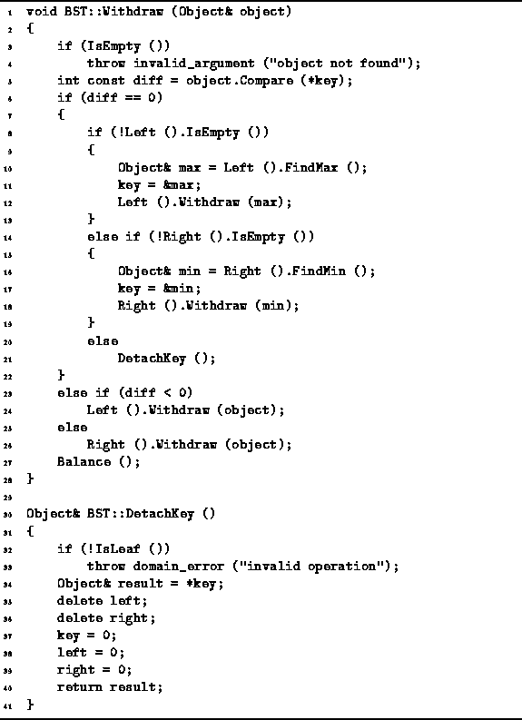

Data Structures and Algorithms
with Object-Oriented Design Patterns in C++
Data Structures and Algorithms
with Object-Oriented Design Patterns in C++
Program  gives the code for the Withdraw and DetachKey
member functions of the BST class.
The Withdraw function takes as its lone argument
a reference to the Object instance to be removed from the tree.
The algorithm first determines the location of the object to be removed
and then removes it according to the method described above.
gives the code for the Withdraw and DetachKey
member functions of the BST class.
The Withdraw function takes as its lone argument
a reference to the Object instance to be removed from the tree.
The algorithm first determines the location of the object to be removed
and then removes it according to the method described above.

Program: BST Class Withdraw and DetachKey Member Function Definitions
 Copyright © 1997 by Bruno R. Preiss, P.Eng. All rights reserved.
Copyright © 1997 by Bruno R. Preiss, P.Eng. All rights reserved.